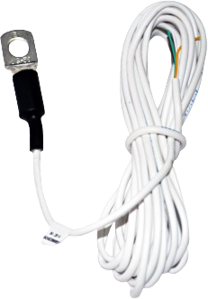
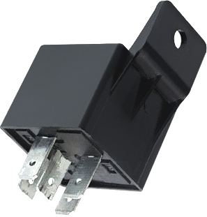
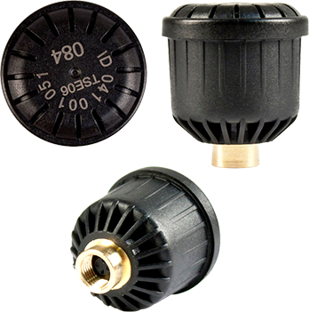
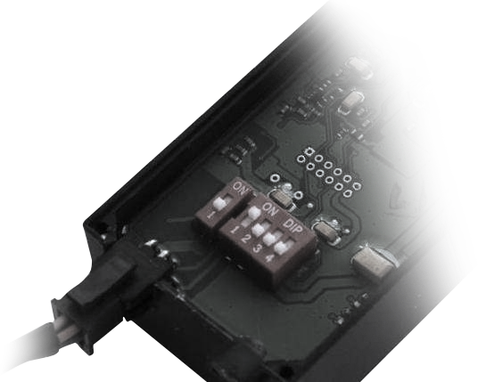

ВАШ БИЗНЕС ПОД КОНТРОЛЕМ!
мы предлагаем
увеличение прибыли за счёт сохранности груза и контроля
транспортного средства.
транспортного средства.
Датчик термоконтроля
Контроль температурного режима в грузовом отсеке необходим при перевозке
продуктов питания, лекарств и других скоропортящихся грузов.
Эту задачу решает датчик термоконтроля, который можно подключить дополнительной
опцией в составе системы мониторинга транспорта.
Вы всегда сможете проконтролировать:
- расположение ТС, соблюдение маршрута;
- скоростной режим ТС;
- пересечение контрольных зон - когда произведена погрузка и разгрузка;
- температуру в грузовом отсеке.
ЦЕНА от 478
руб.

Датчик открытия дверей кузова
Проблема кражи ценных товаров всегда актуальна: нападение на фуры, вскрытие прицепов.
Сегодня кража груза – самый распространённый вид преступлений на дорогах. А если вы занимаетесь перевозкой грузов на заказ? Утрата чужого груза, согласитесь, ситуация весьма неприятная.
Сегодня кража груза – самый распространённый вид преступлений на дорогах. А если вы занимаетесь перевозкой грузов на заказ? Утрата чужого груза, согласитесь, ситуация весьма неприятная.
Для решения этой проблемы
мы предлагаем установку специальных датчиков.
Датчик открытия двери устанавливается в прицепе и интегрируется в единую
систему мониторинга транспорта.
При попытке открыть двери извне возможно настроить оповещение на телефон с предупреждаем о попытке взлома.
При попытке открыть двери извне возможно настроить оповещение на телефон с предупреждаем о попытке взлома.
Датчик поможет решить следующие задачи:
Обеспечение безопасности перевозок
Соблюдение условий контракта при перевозках фармацевтических препаратов, алкогольной и табачной продукции и других «нежных» грузов
Отслеживание доступа к грузу
ЦЕНА от 478
руб.
Контроль ТС за рубежом – мониторинг в роуминге.
Мы поможем вам контролировать международные автомобильные перевозки.
Вы будете получать информацию о:
- состоянии фур
- состояние грузов
- уровне топлива
- температурном режиме
Сотрудничая с операторами мобильной связи,
мы предлагаем возможность получения данныхпо супервыгодному тарифу.
Удаленная блокировка двигателя
Для надежной защиты прокатных автомобилей предлагаем идеальное
решение по удаленному контролю работы двигателя.Дополнительная опция в системе мониторинга транспорта.
плюсы:
- возможность дистанционного управления;
- возможность работы при критических температурных показателях (-50; +85 °С);
- возможность управления с телефона;
- возможность определения местоположения авто (точность до нескольких метров).
ЦЕНА от 478
руб.

Датчик контроля нагрузки на ось
Предлагаем комплекс с геонавигационной системой GPS/ГЛОНАСС,
который в режиме онлайн будет вам передавать данные о нагрузке на ось.
Такой датчик даёт вам возможность:
- оптимально рассчитать загрузку фуры;
- исключить «левые» загрузки, благодаря непрерывному контролю изменений массы груза;
- контролировать время загрузок и разгрузок.
Сотрудничая с операторами мобильной связи,
мы предлагаем возможность получения данных
ЦЕНА от 478
руб.
Система контроля давления в шинах
Недостаточное давление в покрышке приводит к излишнему расходу топлива и износу шины.
Кроме того, недокачанная покрышка – это всегда риск ДТП на дороге:
при экстренном манёвре или торможении авто начинает уводить в сторону, шина может
слететь с диска, а машина просто перевернуться.
Для предотвращения подобных ситуаций, мы предлагаем использовать систему контроля давления в шинах.
Датчики устанавливаются вовнутрь шины или на золотник.
Эти системы дадут вам возможность:
- экономить топливо и увеличить срок службы каркаса шины;
- предотвратить поломки, которые могут привести к простоям, штрафам за опоздание и ухудшению репутации;
- экономить топливо и увеличить срок службы каркаса шины;
ЦЕНА от 478
руб.

Эмулятор AdBlue
для безопасно отключения мочевины на грузовом авто.
Монтаж эмулятора позволит двигателю не ограничивать мощность и обороты
из-за неисправной системы AdBlue SCR или отсутствия мочевины в баке AdBlue.Установка эмулятора производится в кабину авто, что защищает прибор от влаги и пыли.
плюсы:
- автомобиль внезапно не сбросит мощность;
- двигатель будет работать с заводскими программами EURO-4, EURO-5;
- любой компонент системы SCR можно демонтировать и продать;
- возможность удаления катализатора системы отработавших газов;
- возможность удаления катализатора системы отработавших газов;
При этом вы сами сможете отключить эмулятор,
и система продолжит работу в штатном режиме.
ЦЕНА от 478
руб.

Звоните и мы поможем
сделаем вашу логистикумаксимально безопаснойи продлить срок эксплуатации транспортных средств!